MyBatis执行器与缓存实现
开门见山，上菜：MyBatis执行器脑图，阅读过程中反复食用即可理解（ ’ - ’ * )
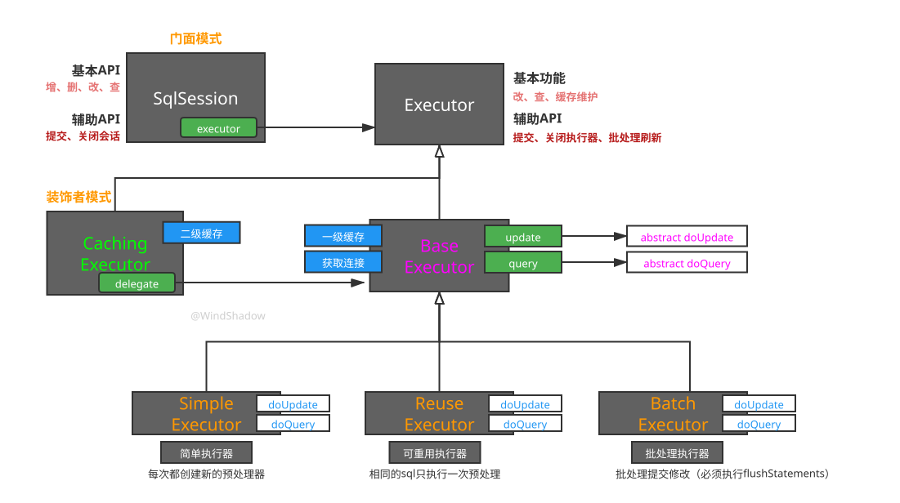
SqlSession
SqlSession接口上的注释
/**
* The primary Java interface for working with MyBatis. Through this interface you can execute
* commands, get mappers and manage transactions.
* Author: Clinton Begin
*/
public interface SqlSession extends Closeable {
// ...
}
翻译一下：使用MyBatis的主要Java接口。通过这个接口，您可以执行命令、获取映射器和管理事务
SqlSession接口定义了如：<T> T selectOne(String statement);、<E> List<E> selectList(String statement);、<K, V> Map<K, V> selectMap(String statement, String mapKey);、int insert(String statement);、int update(String statement);、int delete(String statement, Object parameter);、void commit();等的一系列增删改查和事务提交/回滚接口，方便开发者调用，MyBatis提供的SqlSession接口实现之一是DefaultSqlSession，实际工作干活的就是它。
根据MyBatis执行器脑图可知其内部又是通过Executor执行器去干活的
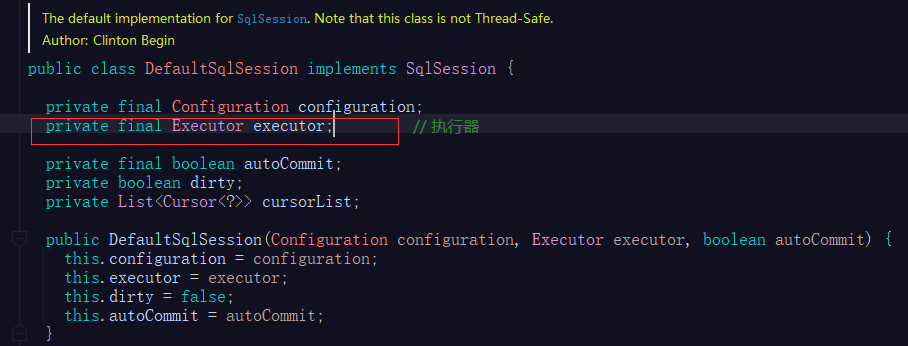
SqlSession的增删改查无论是怎么查，怎么改，怎么删、怎么加，最终都是调用Executor的“update改”和“query查”两个接口（见下文），这就是SqlSession使用的设计模式：门面模式，对外提供友好的api方法，内部屏蔽了调用Executor方法的复杂性。
Executor
Executor（org.apache.ibatis.executor.Executor）是一个接口，称之为sql执行器。
其定义update(增、改、删)、query(查)、commit(提交事务)、rollback(回滚事务)等操作。
几个重要的方法：
增、改、删
// 增、改、删 int update(MappedStatement ms, Object parameter) throws SQLException参数含义如下
MappedStatement ms：SQL映射语句（Mapper.xml文件每一个方法对应一个MappedStatement对象）Object parameter：参数，通常是List
查询方法
// 查询方法 < E> List< E> query(MappedStatement ms, Object parameter, RowBounds rowBounds, ResultHandler resultHandler)参数含义（不赘述出现过的参数类型）如下
RowBounds：行边界，主要保存分页参数（limit、offset）ResultHandler resultHandler：结果处理器，入参时一般为null，实际的结果处理器由Configuration配置对象和MappedStatement对象生成
可提供缓存key的查询方法
// 可提供缓存key的查询方法 <E> List<E> query(MappedStatement ms, Object parameter, RowBounds rowBounds, ResultHandler resultHandler, CacheKey cacheKey, BoundSql boundSql) throws SQLException;参数含义（不赘述出现过的参数类型）如下：
CacheKey：缓存的key对象BoundSql boundSql：可以通过该对象获取SQL语句，MyBatis保存sql语句的对象。
创建缓存Key（MyBatis一二级缓存的缓存Key）
// 创建缓存Key（MyBatis一二级缓存的缓存Key） CacheKey createCacheKey(MappedStatement ms, Object parameterObj, RowBounds bounds, BoundSql bSql)可以看出缓存Key由上述参数（SQL映射语句
MappedStatement、参数Object、行边界RowBounds、sql语句对象BoundSql）来决定。
下面一一介绍Executor的实现类：BaseExecutor、SimpleExecutor、ReuseExecutor、BatchExecutor、CachingExecutor，其实还有一个ClosedExecutor，代表已经关闭的Executor，是ResultLoaderMap的私有内部类，此处不展开阐述。
BaseExecutor
Executor的抽象实现，实现执行器的公共操作：一级缓存、连接获取等，查询、更新具体的实现由其子类来实现
- 具体的查询操作：
doQuery方法 - 具体的更新操作：
doUpdate方法（包括增删改）
// 更新操作，抽象方法，子类实现
protected abstract int doUpdate(MappedStatement ms, Object parameter) throws SQLException;
// 查询操作，抽象方法，子类实现
protected abstract <E> List<E> doQuery(MappedStatement ms, Object parameter, RowBounds rowBounds, ResultHandler resultHandler, BoundSql boundSql)
throws SQLException;
SimpleExecutor
简单执行器，继承BaseExecutor，无论执行的sql如何，每次都会生成预编译java.sql.PreparedStatement对象。
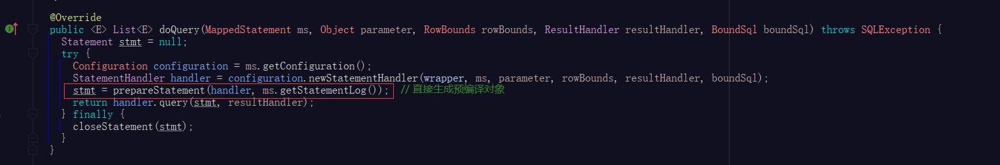
ReuseExecutor
可重用执行器，继承BaseExecutor，相同的sql（肯定是带占位符的）只进行一次预编译（缓存），即预编译对象可重用。
缓存大致原理：
内部维护一个map（key: sql, value: Statement对象）作为预编译对象的缓存
public class ReuseExecutor extends BaseExecutor {
// 缓存 Statement 的 map，【key: sql, value: Statement对象】
private final Map<String, Statement> statementMap = new HashMap<>();
}
在执行doUpdate或doQuery方法时先查缓存，为命中则生成新的预编译对象且加入缓存map中（如图）
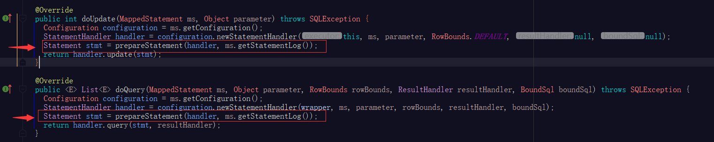
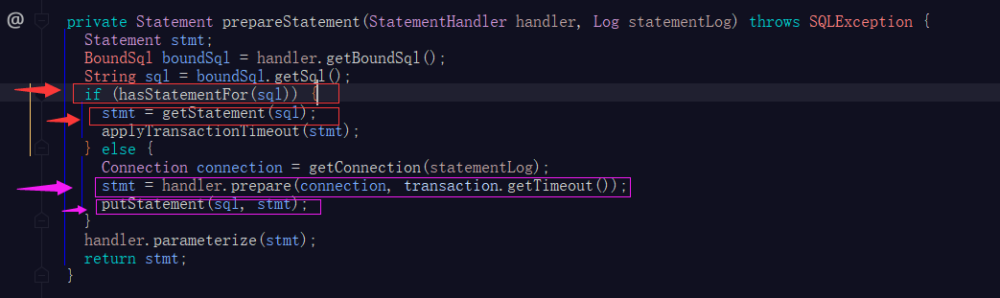
BatchExecutor
批处理执行器，继承BaseExecutor，该执行器专为批处理场景设计；
（解释一下批处理场景：
假设我们需要遍历一个用户对象集合，对每个用户年龄进行加1操作然后更新，假设我们使用ReuseExecutor，那么每个用户的更新操作都会向数据库发送一次sql，而批处理操作便是一次性向数据库发送多条sql。）
BatchExecutor属性成员
public class BatchExecutor extends BaseExecutor {
public static final int BATCH_UPDATE_RETURN_VALUE = Integer.MIN_VALUE + 1002;
// Statement集合，批处理的sql对应的Statement都会存在这里
private final List<Statement> statementList = new ArrayList<>();
// 批处理执行的结果集合
private final List<BatchResult> batchResultList = new ArrayList<>();
// 当前维护的sql（肯定带占位符的）
private String currentSql;
// 当前维护的MappedStatement
private MappedStatement currentStatement;
}
值得注意的是：
- 对查询操作，同简单执行器
SimpleExecutor一样，批处理执行器每次都会生成预编译对象 - 对于更新操作(增删改)，
BatchExecutor对象本身会记录当前的sql和MappedStatement，如果下一次更新操作的sql和MappedStatement与维护的sql和MappedStatement都相同，则直接复用，否则替换掉当前维护的sql和MappedStatement BatchExecutor需要调用flushStatements()方法刷新statement，数据库内的数据修改才会生效。- 执行
BatchExecutor的doQuery方法时，会先执行flushStatements()方法，再进行查询操作
下面贴出BatchExecutor实现doUpdate方法的源码，并加以注释。
public class BatchExecutor extends BaseExecutor {
// ...
@Override
public int doUpdate(MappedStatement ms, Object parameterObject) throws SQLException {
final Configuration configuration = ms.getConfiguration();
final StatementHandler handler = configuration.newStatementHandler(this, ms, parameterObject, RowBounds.DEFAULT, null, null);
final BoundSql boundSql = handler.getBoundSql();
final String sql = boundSql.getSql();
final Statement stmt;
if (sql.equals(currentSql) && ms.equals(currentStatement)) {// 当前维护的sql和ms与要执行的sql和ms比较，若都相同
int last = statementList.size() - 1;
stmt = statementList.get(last);// 取出statement列表最后一个元素作为当前的statement
applyTransactionTimeout(stmt);
handler.parameterize(stmt);
BatchResult batchResult = batchResultList.get(last); // 取出最后一个批处理执行结果
batchResult.addParameterObject(parameterObject); // 并添加当前的参数对象到该批处理执行结果
} else {// 当前维护的sql和ms与要执行的只要有一个不同
Connection connection = getConnection(ms.getStatementLog());
stmt = handler.prepare(connection, transaction.getTimeout());// 获取新的statement
handler.parameterize(stmt);
currentSql = sql;// 顶替掉维护的sql
currentStatement = ms;// 顶替掉维护的ms
statementList.add(stmt);// 添加新的statement到statement列表
batchResultList.add(new BatchResult(ms, sql, parameterObject));// 添加新的批处理结果到列表
}
handler.batch(stmt);
return BATCH_UPDATE_RETURN_VALUE;
}
// ...
}
通过阅读BatchExecutor的成员变量和doUpdate方法的源码，不难发现，以下几点：
通过statement列表保存要执行的sql操作
BatchExecutor内部通过维护一个sql和一个MappedStatement来减少statement的生成，连续相同的sql和MappedStatement不会生成新的statement通过批处理结果对象（
BatchResult）列表，维护批处理结果，其中批处理结果对象维护了MappedStatement、sql以及不同参数的列表。public class BatchResult { private final MappedStatement mappedStatement; private final String sql; private final List<Object> parameterObjects; }statement列表和批处理结果对象（
BatchResult）列表，它们下标对应的元素是一一对应有关联的
CachingExecutor
缓存执行器，实现Executor接口，实现二级缓存，详情见下文。
一缓存实现原理
首先要明确一级缓存存在的意义（需求）：同一个事务内，多次相同的查询每次都查询数据库性能是不高的，所以要做缓存
所以sql执行器Executor接口干净利落的定义了一级缓存（也叫localCache）相关的接口，因为一级缓存是一个逻辑上必然应该存在的功能。
前文讲到MyBatis的一级缓存是由BaseExecutor实现的，BaseExecutor通过内部的PerpetualCache localCache缓存对象来维护缓存。
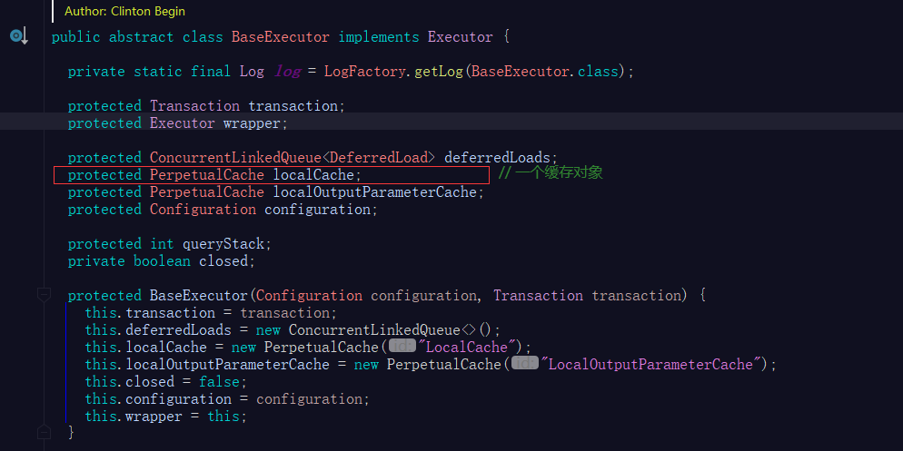
PerpetualCache 内部通过维护一个map实现MyBatis的Cache接口（此处不展开MyBatis的缓存接口的实现体系）。
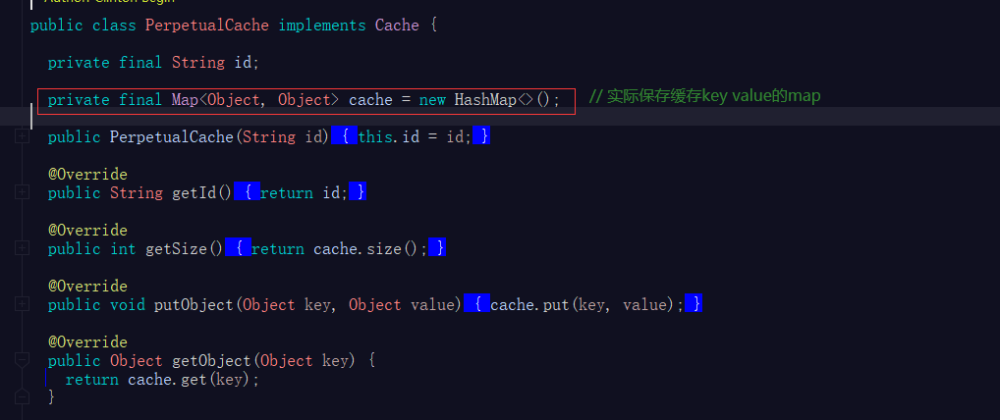
一级缓存源码分析
我们将BaseExecutor实现Executor接口的两个query方法源码贴出并加以关键注释，即可明白BaseExecutor如何实现MyBatis一缓存的，如下：
不带缓存key的查询方法
@Override
public <E> List<E> query(MappedStatement ms, Object parameter, RowBounds rowBounds, ResultHandler resultHandler) throws SQLException {
BoundSql boundSql = ms.getBoundSql(parameter);// 通过MappedStatement对象获取sql
CacheKey key = createCacheKey(ms, parameter, rowBounds, boundSql);// 创建缓存key
return query(ms, parameter, rowBounds, resultHandler, key, boundSql);// 调用带缓存key的查询方法
}
带缓存key的查询方法（重点）
@SuppressWarnings("unchecked")
@Override
public <E> List<E> query(MappedStatement ms, Object parameter, RowBounds rowBounds, ResultHandler resultHandler, CacheKey key, BoundSql boundSql) throws SQLException {
ErrorContext.instance().resource(ms.getResource()).activity("executing a query").object(ms.getId());
if (closed) {
throw new ExecutorException("Executor was closed.");
}
if (queryStack == 0 && ms.isFlushCacheRequired()) {
clearLocalCache();
}
List<E> list;// 定义查询结果引用
try {
queryStack++;
// 1、满足resultHandler == null则走缓存获取查询结果
list = resultHandler == null ? (List<E>) localCache.getObject(key) : null;
if (list != null) {// 2、缓存命中了，处理缓存的输出参数，可不必关心此处干了啥
handleLocallyCachedOutputParameters(ms, key, parameter, boundSql);
} else {
// 3、缓存未命中，从数据库查询数据
list = queryFromDatabase(ms, parameter, rowBounds, resultHandler, key, boundSql);
}
} finally {
queryStack--;
}
if (queryStack == 0) {
for (DeferredLoad deferredLoad : deferredLoads) {
deferredLoad.load();
}
deferredLoads.clear();
if (configuration.getLocalCacheScope() == LocalCacheScope.STATEMENT) {
clearLocalCache();
}
}
return list;// 4、返回结果
}
查询数据库的方法queryFromDatabase
private <E> List<E> queryFromDatabase(MappedStatement ms, Object parameter, RowBounds rowBounds, ResultHandler resultHandler, CacheKey key, BoundSql boundSql) throws SQLException {
List<E> list;// 1、定义查询结果
localCache.putObject(key, EXECUTION_PLACEHOLDER);
try {
list = doQuery(ms, parameter, rowBounds, resultHandler, boundSql);// 2、调用子类的doQuery方法进行查询
} finally {
localCache.removeObject(key);
}
localCache.putObject(key, list);// 3、缓存结果，一级缓存的写入操作！！！
if (ms.getStatementType() == StatementType.CALLABLE) {
localOutputParameterCache.putObject(key, parameter);
}
return list;// 4、返回结果
}
一级缓存清除时机
BaseExecutor更新操作（方法）被调用时，清除执行器缓存的数据
@Override
public int update(MappedStatement ms, Object parameter) throws SQLException {
ErrorContext.instance().resource(ms.getResource()).activity("executing an update").object(ms.getId());
if (closed) {
throw new ExecutorException("Executor was closed.");
}
clearLocalCache(); // 1、清除该执行器的一级缓存
return doUpdate(ms, parameter);// 2、调用子类的doUpdate方法执行更新操作
}
根据一级缓存的需求，事务提交后，缓存应该就要被清空，这一点在BaseExecutor的 commit方法中体现
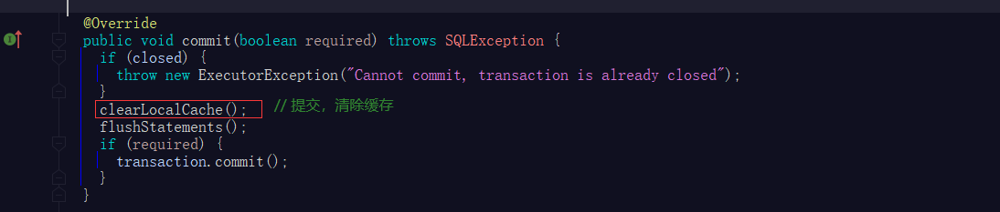
BaseExecutor实现一级缓存总结
- 如何维护：通过
PerpetualCache localCache成员变量维护一级缓存 - 写入时机：实现
Executor接口的query方法时，先尝试从缓存中获取查询结果，获取不到则调用子类的doQuery方法从数据库获取查询结果，获取到数据后写入缓存再返回 - 清除时机：【1】执行
BaseExecutor实现Executor执行器接口的update更新方法时，先清除一级缓存的所有数据，再调用子类的doUpdate方法执行更新操作；【2】BaseExecutor的commit方法被调用时清除一级缓存的所有数据
二级缓存实现原理
同样，先明确二级缓存存在的意义（需求）：我们希望数据的缓存结果可以覆盖整个应用，也就是多个事务，一个事务的查询结果被缓存后，另一个事务也能读取到这个缓存结果，以减少对数据库的访问次数，加快数据查询效率。
MyBatis的二级缓存是通过CachingExecutor实现的，需要注意的是，CachingExecutor在Executor类结构中和BaseExecutor是同级的，内部维护了一个Executor对象，通过构造方法传入
public class CachingExecutor implements Executor {
private final Executor delegate;// 被装饰的Executor执行器对象
private final TransactionalCacheManager tcm = new TransactionalCacheManager();// 事务缓存管理器
public CachingExecutor(Executor delegate) {
this.delegate = delegate;
delegate.setExecutorWrapper(this);
}
}
CachingExecutor专门负责二级缓存，而获取连接等执行器的基本操作则交给给内部的Executor对象，此处用到了设计模式中的“装饰者模式（装饰器模式）”，在不改变原有功能的基础上，增加新功能，这里的新功能就是二级缓存的功能了。
（有的文章说这是委派模式，CachingExecutor的Executor delegate变量名称确实是委派的意思。不过根据笔者的理解和查询其它高质量的文章之后，比较赞同该设计模式为装饰者模式，因为CachingExecutor确实做到了“在不改变原有功能的基础上，增加新功能”，并且委派模式中，通常“委派者”在委派任务时，通常要根据条件决定把任务交给哪个具体的实现对象，CachingExecutor显然不是这样的情形）
二级缓存源码分析
CachingExecutor实现二级缓存的操作类似于一级缓存，在实现Executor接口的query方法时先查缓存，查不到则调用内部的Executor对象的query方法获取。下面分析CachingExecutor的query方法。
不带缓存key的查询方法，最终调用带缓存key的查询方法，与一级缓存相同
@Override
public <E> List<E> query(MappedStatement ms, Object parameterObject, RowBounds rowBounds, ResultHandler resultHandler) throws SQLException {
BoundSql boundSql = ms.getBoundSql(parameterObject);
CacheKey key = createCacheKey(ms, parameterObject, rowBounds, boundSql);
return query(ms, parameterObject, rowBounds, resultHandler, key, boundSql);
}
带缓存key的查询方法（重点）
@Override
public <E> List<E> query(MappedStatement ms, Object parameterObject, RowBounds rowBounds, ResultHandler resultHandler, CacheKey key, BoundSql boundSql)
throws SQLException {
Cache cache = ms.getCache(); // 1-A、从MappedStatement获取缓存对象
if (cache != null) {// 2、如果缓存对象不为空
flushCacheIfRequired(ms);
if (ms.isUseCache() && resultHandler == null) {// 3、如果MappedStatement开启了缓存，且resultHandler == null
ensureNoOutParams(ms, boundSql);
@SuppressWarnings("unchecked")
List<E> list = (List<E>) tcm.getObject(cache, key);// 4、尝试从通过事务缓存管理器对象获取查询结果
if (list == null) {// 5、从缓存对象获取查询结果为空
// 6、调用内部的执行器对象进行查询
list = delegate.query(ms, parameterObject, rowBounds, resultHandler, key, boundSql);
tcm.putObject(cache, key, list);// 7、通过事务缓存管理器对象缓存结果，二级缓存的写入操作！！！
}
return list;// 8、返回结果
}
}
// 1-B、MappedStatement获取不到缓存对象则直接调用内部的执行器对象进行查询并返回
return delegate.query(ms, parameterObject, rowBounds, resultHandler, key, boundSql);
}
二级缓存清除时机
CachingExecutor更新操作（方法）被调用时，清除所有缓存的数据
@Override
public int update(MappedStatement ms, Object parameterObject) throws SQLException {
// 1、刷新（清除）缓存，因为是更新操作，ms.isFlushCacheRequired() == true
flushCacheIfRequired(ms);
return delegate.update(ms, parameterObject);// 2、再调用装饰的执行器执行更新操作
}
flushCacheIfRequired刷新（清除）缓存，如果可以需要的话
private void flushCacheIfRequired(MappedStatement ms) {
Cache cache = ms.getCache();
// 1、缓存对象有效且设置了MappedStatement必须刷新缓存的开关为true，则清除MappedStatement中的缓存
if (cache != null && ms.isFlushCacheRequired()) {
tcm.clear(cache);// 2、通过事务缓存管理器对象清空MappedStatement中的缓存
}
}
二级缓存跨事务使用具体实现与数据一致性原理（重点）
思考三个点：
由二级缓存的需求可知，二级缓存服务于多个事务的，因为同一个事务内的多次查询已经由一级缓存来保证效率了，所以显然缓存数据的写入应该在事务提交时才会写入。
而
CachingExecutor提交方法commit是直接调用事务缓存管理器对TransactionalCacheManager的提交方法，毫无疑问二级缓存数据的写入操作肯定与该方法有关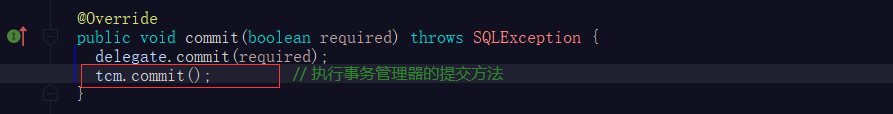
又通过
CachingExecutor的query方法源码分析可知，二级缓存的数据的存储实际由MappedStatement对象的自身的cache缓存来做的，而缓存的添加和删除是调用TransactionalCacheManager的方法实现的而二级缓存在得到查询结果后就直接通过事务缓存管理器对象
TransactionalCacheManager缓存结果了，但是此时事务并没有提交。
由以上三点可知，CachingExecutor通过MappedStatement的cache缓存和事务缓存管理器TransactionalCacheManager的配合来实现二级缓存
来看看事务缓存管理器TransactionalCacheManager管理啥了
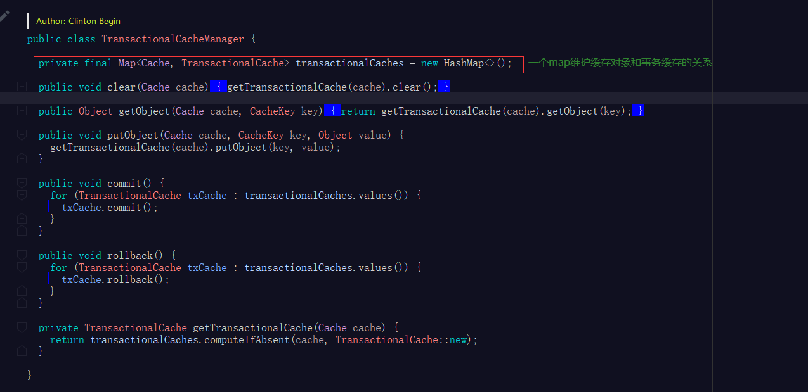
不难看出TransactionalCacheManager实际管理的是MappedStatement的cache缓存和事务缓存对象TransactionalCache的关系，TransactionalCacheManager的方法最终执行的都是TransactionalCache的方法。
带着这个问题阅读TransactionalCache的源码（读者自行阅读），理解TransactionalCacheManager、cache缓存、TransactionalCache的关系就全懂了。总结出下图
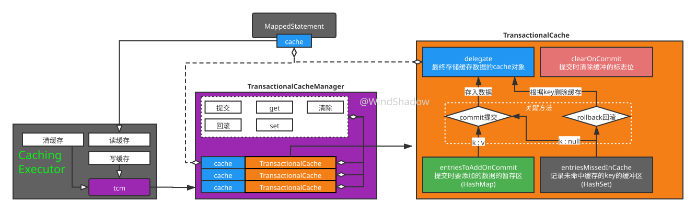
TransactionalCache源码总结
TransactionalCache的四个成员变量含义如上图所示
二级缓存数据添加流程：
CachingExecutor的query查询操作通过事务管理器（tcm）添加缓存时，tcm根据该缓存对象获取对应的事务缓存对象TransactionalCache（tc）- tc将要添加的二级缓存的key-value对先添加到一个由hashmap实现的暂存区
- 在执行
commit方法（CachingExecutor->TransactionalCacheManager->TransactionalCache）时，tc将暂存区的数据添加到缓存cache（MappedStatement的cache）中，同时将记录过未命中缓存的key也加入到缓存cache中，这些key的value为null。
二级缓存未命中时，tc记录当前未命中的key到一个由hashset实现的缓冲区中
clearOnCommit的作用：
TransactionalCache通过clearOnCommit变量标记，通知事务进行提交时，决定是否先清空二级缓存（MappedStatement的cache），后以当前事务的发生的缓存为最新缓存，刷新到二级缓存中。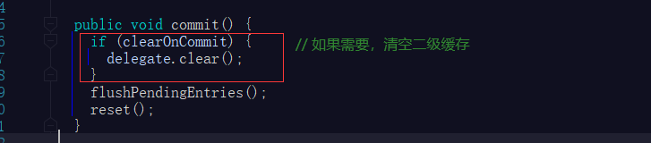
- clearOnCommit = true时，则认为当前二级缓存中的数据无效，调用
TransactionalCache的getObject方法获取缓存中的数据必定是null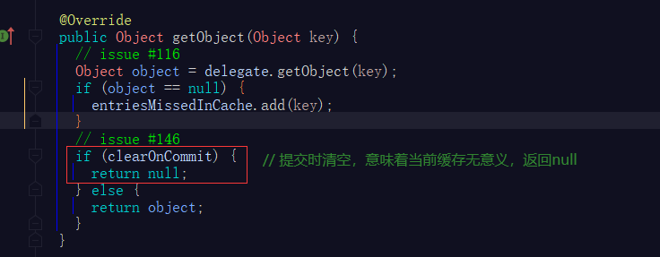
TransactionalCache每次提交或回滚后，调用内部的reset方法将clearOnCommit变量设置为false（见上图commit方法），以便后续的事务可以读到二级缓存的数据。
而clearOnCommit = true 的情况只有在调用
TransactionalCacheManager的clear方法时（TransactionalCacheManager->TransactionalCache）才会出现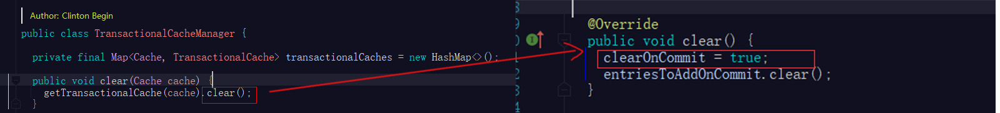
而只有在调用
CachingExecutor的flushCacheIfRequired方法时可能调用TransactionalCacheManager的clear方法（见前文源码），追溯到底，若想触发clearOnCommit = true，则需要触发MappedStatement#isFlushCacheRequired为true，当执行更新操作时上述情况才会发生。
得出二级缓存数据一致性原理：执行器执行更新操作时，MappedStatement#isFlushCacheRequired为true，对应缓存的TransactionalCache的clearOnCommit = true，达到在没有事务提交或回滚前，缓存查询不命中的效果，保证数据的一致性。
二级缓存命中示例
调用执行器的commit方法进行提交时，二级缓存中才会有数据，后续的查询操作才能命中缓存，示例代码如下
/**
* cachingExecutor的二级缓存
*/
@Test
public void cachingExecutorTest() throws SQLException {
CachingExecutor cachingExecutor = new CachingExecutor(new SimpleExecutor(configuration,transaction));
MappedStatement ms = configuration.getMappedStatement("ws.mybatis.demo.mapper.UserMapper.selectByPrimaryKey");
// 查询id为1的user
List<User> ls1 = cachingExecutor.query(ms, 1L,RowBounds.DEFAULT,Executor.NO_RESULT_HANDLER);
cachingExecutor.commit(true);// 提交，重要！！！
// 命中二级缓存
List<User> ls2 = cachingExecutor.query(ms, 1L,RowBounds.DEFAULT,Executor.NO_RESULT_HANDLER);
List<User> ls3 = cachingExecutor.query(ms, 1L,RowBounds.DEFAULT,Executor.NO_RESULT_HANDLER);
log.info("{}",ls1.get(0).equals(ls2.get(0)));// true
log.info("{}",ls2.get(0).equals(ls3.get(0)));// true
}
因为二级缓存是跨线程跨连接调用的，所以需要设计成提交后数据才会写入缓存，而一级缓存是单线程内调用，所以无需提交。
CachingExecutor实现二级缓存总结
CachingExecutor使用“装饰者模式”，装饰一级缓存的Executor执行器对象，增加二级缓存的功能- 查询操作时，查询顺序是：二级缓存 -> 一级缓存 -> 数据库
CachingExecutor本身不维护二级缓存，而是作为MappedStatement的缓存的调用者，所以二级缓存也被称为“Mapper级别的缓存”。事务缓存管理器对象TransactionalCacheManager、TransactionalCache、MappedStatement三者的搭配实现了二级缓存底层功能。- 执行
CachingExecutor实现Executor执行器接口的update更新方法时，会先清除二级缓存的所有数据，再调用被装饰执行器的update方法执行更新操作 - 二级缓存需要手动开启，mapper.xml文件中需要指定
<cache/>标签以开启二级缓存，这样生成的MappedStatement才会有Cache缓存对象，MappedStatement#getCache()方法返回值不是null（见query方法源码），CachingExecutor才能使用到MappedStatement的缓存。
一些思考
二级缓存线程安全吗，一级缓存呢？
二级缓存线程不安全，二级缓存是mapper级别的缓存，是跨线程跨连接的，实际的实现是
MappedStatement来实现的，底层存储也是HashMap而不是ConcurrentHashMap，二级缓存也不用也没必要实现线程安全，因为SqlSession本身就是线程不安全的。一级缓存肯定是线程安全的，因为一级缓存的读写只可能在一个线程，一个连接里发生。（如果你强行将
BaseExeCutor让多个线程调用，那当我没说）二级缓存能保证100%数据一致性吗？
不能，因为
MappedStatement对象是SQL映射语句的封装，那么当这个sql操作过的表，在其他mapper的sql里也操作了，对应MappedStatement的缓存肯定是不感知的，所以二级缓存的数据一致性，需要开发者自己注意，MyBatis的CachingExecutor在代码层面上有效保证了数据一致性，但是实际的sql语句造成的影响需要开发者控制，这也是为什么二级缓存需要手动开启的原因。二级缓存为什么不在
BaseExecutor实现？二级缓存如果在
BaseExecutor实现，那么BaseExecutor必然需要怎么某种开关去控制二级缓存的开启与关闭，这就造成BaseExecutor的职责不单一，面向对象编程应该要让一个类职责明确。二级缓存为什么不像一级缓存一样通过类继承实现？
如此做会造成
Executor类体系结构过于复杂，使用装饰者模式在不改变原有功能的基础上增加二级缓存功能是很好的选择。三级缓存甚至n级缓存如何实现？
参考二级缓存的实现，继续使用装饰者模式实现三级缓存甚至n级缓存都是ok的。
推荐阅读
MyBatis源码阅读指南【鲁班大叔】：https://www.bilibili.com/read/cv7933087
本文参考B站UP主“鲁班大叔”https://space.bilibili.com/190795407的MyBatis源码分析教学视频进行整理；
感谢成长路上为在下传道受业解惑之人